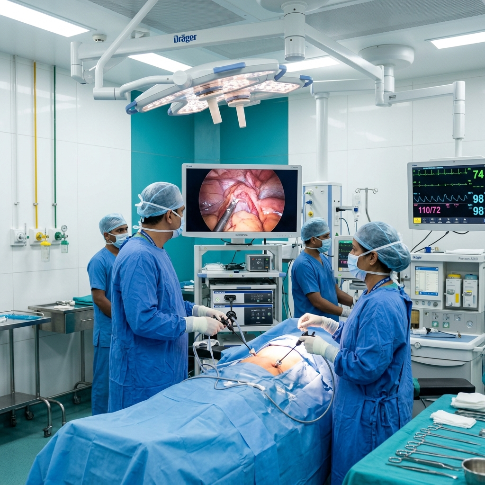

Gynaecological Problem and Laparoscopic Surgery
Minimally invasive keyhole surgery for gynaecological conditions — faster recovery, less pain, reduced scarring and shorter hospital stays.

About This Service
Laparoscopy uses a small tube with a light and camera inserted through tiny incisions to view and operate inside the abdomen without large cuts. Dr. Pooja is a fellowship-trained endoscopic surgeon.
Who It's For
Women with fibroids, ovarian cysts, endometriosis, pelvic pain, or those needing diagnostic exploration.
What to Expect
Short hospital stay, minimal pain post-op, 2–3 small incisions, faster return to daily activities compared to open surgery.
How We Do It
Pre-surgical Evaluation
Blood tests, ultrasound and anaesthesia assessment.
Keyhole Incisions
2–3 tiny cuts made under general anaesthesia.
Camera Insertion
Laparoscope inserted to view organs on a monitor in real time.
Surgical Procedure
Cysts, fibroids or adhesions removed through small instruments.
Recovery
Most patients go home same day or next morning with minimal discomfort.